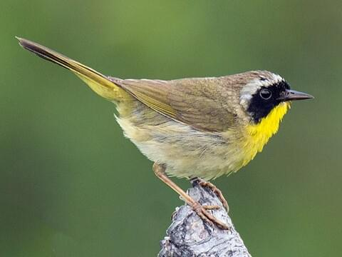

| Yellow Tanager |
Chrysothylpis chrysomelas |
Wet forest canopies and second-growth forests |
Omnivore & Beetles, flies, crickets |
They swallow soft fruit whole |

|

|
| Yellow-Eyed Penguin |
Megadyptes antipodes |
Rocky Antarctic Islands |
Carnivore & Krill |
Yellow-eyed Penguins are the 4th-longest penguins |

|

|
| Yellowhammer |
Emberiza citrinella |
Grasslands, shrublands, farmlands |
Omnivore, Starchy seeds |
It interbreeds with the pine bunting,40 to 70 million |

|

|
| Yellowthroat |
Geothlypis trichas, Geothlypis beldingi |
Mwetlandsarshes and other |
Insectivore |
They forage near the ground, searching leaves for insects |

|

|
| Yellow Bellied Sapsucker |
Sphyrapicus varius |
Edge habitats and young forests |
Omnivore, sap |
The males are responsible for choosing the nesting tree most of the
time. Luckily, cavity nests are often reused for multiple breeding
seasons up to 7 years.
|

|

|